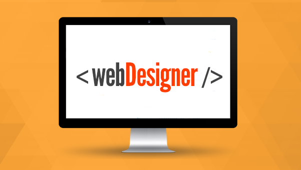

Webdesigner

O Curso de Web Designer é uma maneira de aprender rapidamente, sem investimento algum, sobre uma das profissões mais bem pagas da atualidade na área da informática. O objetivo do curso grátis de web designer é qualificar o aluno a criar sites pessoais e empresariais de qualidade profissional, utilizando ferramentas indispensáveis como Adobe Photoshop CS5, Wordpress, HTML entre outros.
O curso de webdesigner está dividido em 25 lições práticas, que irão mostrar ao aluno tudo que ele precisa saber para desenvolver sites.
Aprenda a fazer sites neste Curso de Webdesigner.
Com o seguinte conteúdo programático:
- Introdução - HTML
- Criando Documentos HTML
- Formatação de Textos
- Controle de Cores e Gráficos de Fundo
- Links
- Listas
- Imagens
- Tabelas
- Cores
- Tipologia
- Ferramentas do Photoshop
- Visualizando as Imagens
- Selecionando e Movendo Imagens
- Modificando as Seleções
- Transformando as Seleções
- Ferramentas de Texto
- Criações de Arquivos para Web
- Vocabulário Utilizado no Photoshop
- Seja um Bom Webdesigner!
- Apresentando o Dreamweaver
- Criando um Novo Site
- Links e Navegação
- Formulários
- Dicas para a Criação de um Site
- Bibliografia/Links Recomendados